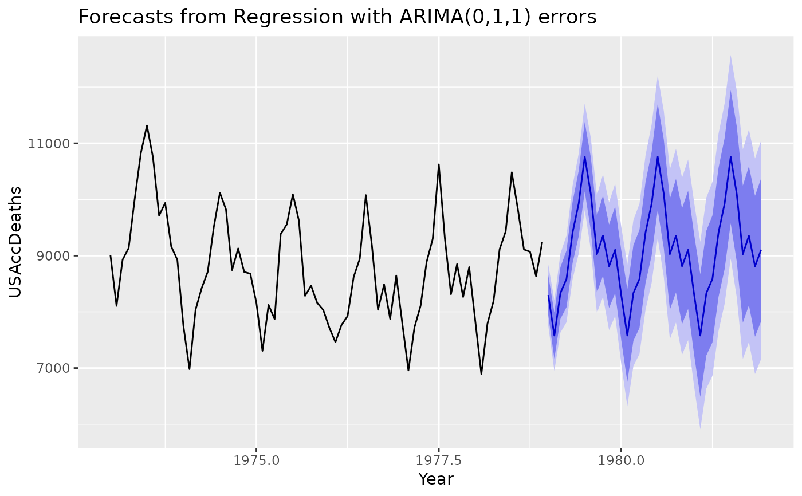

fourier returns a matrix containing terms from a Fourier series, up
to order K, suitable for use in Arima,
auto.arima, or tslm.
fourier(x, K, h = NULL) fourierf(x, K, h)
Arguments
| x | Seasonal time series: a |
|---|---|
| K | Maximum order(s) of Fourier terms |
| h | Number of periods ahead to forecast (optional) |
Value
Numerical matrix.
Details
fourierf is deprecated, instead use the h argument in
fourier.
The period of the Fourier terms is determined from the time series
characteristics of x. When h is missing, the length of
x also determines the number of rows for the matrix returned by
fourier. Otherwise, the value of h determines the number of
rows for the matrix returned by fourier, typically used for
forecasting. The values within x are not used.
Typical use would omit h when generating Fourier terms for training a model
and include h when generating Fourier terms for forecasting.
When x is a ts object, the value of K should be an
integer and specifies the number of sine and cosine terms to return. Thus,
the matrix returned has 2*K columns.
When x is a msts object, then K should be a vector of
integers specifying the number of sine and cosine terms for each of the
seasonal periods. Then the matrix returned will have 2*sum(K)
columns.
See also
Examples
library(ggplot2) # Using Fourier series for a "ts" object # K is chosen to minimize the AICc deaths.model <- auto.arima(USAccDeaths, xreg=fourier(USAccDeaths,K=5), seasonal=FALSE) deaths.fcast <- forecast(deaths.model, xreg=fourier(USAccDeaths, K=5, h=36)) autoplot(deaths.fcast) + xlab("Year")# Using Fourier series for a "msts" object taylor.lm <- tslm(taylor ~ fourier(taylor, K = c(3, 3))) taylor.fcast <- forecast(taylor.lm, data.frame(fourier(taylor, K = c(3, 3), h = 270))) autoplot(taylor.fcast)